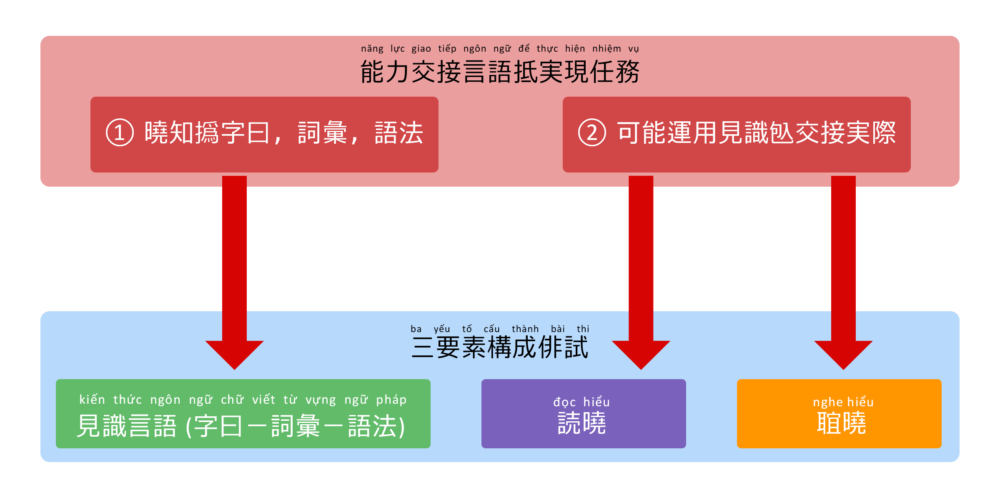

度量能力交接言語抵実現任務
其試打價能力㗂越空衹打價役伴曉知包𡗉撝字曰，詞彙和語法㗂越，麻䁛重可能使用見識𪦆抵実現各任務交接中実際局𤯨。帝食現各任務恪憢中𠁀𤯨行日，衆咱空衹勤見識言語麻勤可能運用衆。

爲𪜀期試規模𡘯，形式𪵯俳𪜀測験𨑗票𫡽𠳒。期試空固份試問答或曰直接抵打價技能呐和曰。
攄撰級度符合自6級堛(V6-V1)
其試打價能力㗂越得𬨟成6堛(V6,V5,V4,V3,V2,V1)。抵度量能力㗂越一格枝節弌，題試得設計符合𠇍特殊𧵑曾穹程度。
留意：抵知添枝節撝要求具体𧵑曾堛，𢝙𢚸参考版標準打價。
- 堛V6和V5 (初級)：主要打價墨度曉和使用㗂越基本中各情況交接単簡，慣属和中媒場学習𡋂磉。
- 堛V3和V4 (中級)：㨂𣘾𠻀𪜀橋𦀼関重，𠢞転接自墨度使用基本(V5，V6),𨑗墨度成套和霊活(V1，V2)。
- 堛V2和V1 (高級)：打價可能曉和使用㗂越專溇中𡗉領域多様𧵑𠁀𤯨実際，各主題複雑或𫼳性学術高。
点梯度得使用抵打價能力㗂越一格正確欣
中各期試得組職𠓨仍時点恪憢，𠱋題試得編纂謹慎𦤾叨，墨度苦𧵑題抆固体𫢼𢬭𠃣𡗉過曾𠞺試。爲丕，𠮩性点𢭸𨑗『点粗』(即𪜀数句𫡽𠳒棟)，旹中場合題試苦或易欣，試生固拱能力抆固体認得数点恪憢。
由𪦆，中期試VLET – 其試打價能力㗂越，点数空得并憑点粗麻圧用『点梯度』。点梯度得并𢭸𨑗方法『equating』(準化点)，𠢞保担哴結果㫻得打價遶拱一𡱩度衆。
𢘾使用点梯度，能力㗂越𧵑試生在時点預試固体得反映一格正確和公平欣過点数。
刑式試直線
其試打價能力㗂越空衹停又於形式伝統麻先風応用工芸𠇍刑式試直線，𠢞最優化𣦆験渚試生：
性霊活和現代：試生固体実現俳試𬆄𨑗各𡋂磉技術数。條㖠𠢞𨔉𠬃𣓿捍撝昿隔地理，渚法人学㗂越𨑗全世界参加打價能力一格順便。
打價全面3技能：𠱋試直線，系痛吻担保度量𣹓𨁥各技能：𦖑，読和曰。各操作得設計最優𨑗交面𣛠并抵試生集中完全𠓨内容俳試。
工芸監察聡明：抵担保性公平和客観渚畢哿各堛自V6 𦤾V1，期試使用各解法監察自動現代，𠢞確実名姓和拫𢳶各行為奸吝。
結果速𨖼和正確：𢘾規程点試得自動化一份，試生固体認結果和証認能力𬁄欣𢫘𢭲刑式試𨑗紙通常。